Cube Data
As mentioned in the previous chapter, the Finance Engine processes data that resides in Cubes, which are powerful, multidimensional databases and the foundation of Consolidations and Financial Planning in OneStream.
In addition to the standard algorithms described in the previous chapter, the Finance Engine allows use-case specific financial intelligence and Calculations to be performed on Cube Data via Business Rules. When writing Calculations, you can perform complex arithmetic on large, multidimensional data sets with as little as one simple line of script.
But with great power comes great responsibility.
Writing effective and efficient Calculations relies on understanding the OneStream data architecture. The rest of this chapter will cover how OneStream stores and processes data in the Cube and how to properly use this data in Calculations.
Cube Data
Cube Building Blocks
We can identify three building blocks that comprise the structure of data within a Cube and how they relate to Calculations. These three building blocks are:
Data Cells
Data Buffers
Data Units
Cube Data › Cube Building Blocks
Data Cells
Data cells represent a singular data point within the Cube. Each data cell has various properties associated with it. Just like everyone reading this book has a home, so does each data cell in the Cube. You live at a specific street number, on a street, in a city, in a state, in a country. That information is enough to pin you to a specific place. Outside of your family or roommates, no one else lives there. If someone is looking for you, they find you there. Cube data is the same. Each data point in a Cube resides at the unique intersection of 18 Dimensions called a Member Script or Data Cell Primary Key (Primary Key). The Primary Key is the address of the data.
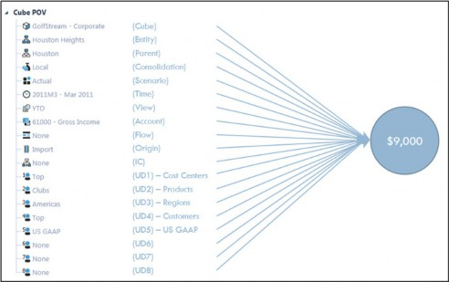
Figure 2.1
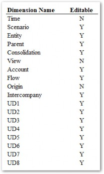
Figure 2.2
Above are the 18 Dimensions which describe a data cell. Some of these Dimensions are fixed and contain default Members which cannot be modified.
The following is a Member Script which represents the intersection of all 18 Dimensions plus Cube. This is the address of the data.
Cb#ACME:E#ACME:P#StoogeCorp:C#Local:S#Budget:T#2023M1:V#Periodic:A#Pri ce:F#EndBalLoad:O#Import:I#None:U1#BugZapper:U2#None:U3#None:U4#None:U 5#None:U6#None:U7#None:U8#None
Cube Data › Cube Building Blocks › Data Cells
Data Entering the Cube
When data enters the Cube – either via a data import, Form entry, or Journal posting – it is normally stored at a Base Level Member of each of the 18 Dimensions (as shown above). I qualify that previous statement with ‘normally’ because – in some rare instances – data can be entered on Parent Entity Members, but we’ll ignore that for now.
Numeric Cube data is stored by year in one of 105 fully normalized fact tables from DataRecord1996 to DataRecord2100. Each record contains the coordinates and numeric amounts for all stored data; this includes Dimension Member information, Cell Amount, and Cell Status. Each record in the data tables contains the data cells for all the periods of the specific year represented by the data table. These data tables are exposed to Administrator-level Users by going to Database in the System tab.
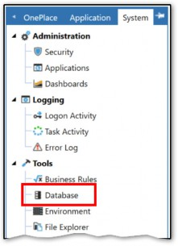
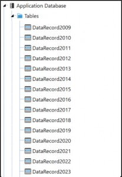
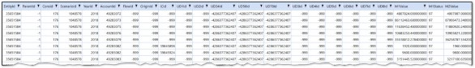
Figure 2.3
Cube Data › Cube Building Blocks › Data Cells › Data Entering the Cube
The View Dimension
The View Dimension is one of the 18 Dimensions mentioned above. It is a ‘fixed’ Dimension, meaning that it contains a standard or fixed list of Members and no additional Members can be added or deleted.
The View Dimension works slightly differently from the other Dimensions in that all but one of the Members store numeric data. The other elements are either dynamically calculated or used to store text. Data is always stored at the YTD Member within the underlying database for numeric values, while it is stored in the corresponding annotation element for text data.
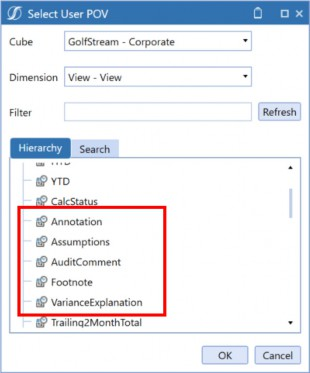
Note: Non-numeric (textual) data can be stored in the Cube using the Figure 2.4 |
Numeric data can be entered on either YTD or Periodic but, again, is always stored at YTD. If entering data at Periodic, OneStream does dynamic math to determine the value that is stored.
Cube Data › Cube Building Blocks › Data Cells
Data Cell Status
Data Cell Status gives us some more information about the data cell.
Cell Status can be viewed directly from a Cube View and is comprised of the following statuses: Real Data, NoData & Zeros, Derived Data.
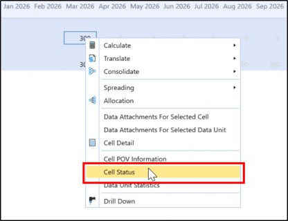
Figure 2.5
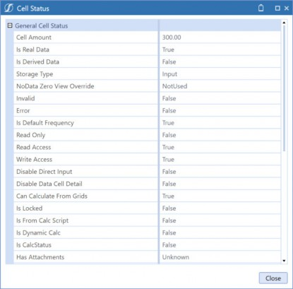
Figure 2.6
Cube Data › Cube Building Blocks › Data Cells › Data Cell Status
Real Data
Real Data is exactly what it sounds like. There’s a record for it; it exists, so it’s real. It refers to data that was physically written to the Cube by Form input, file import, or Journal entry. Calculated and Consolidated data is also Real Data. Real Data takes database space.
Cube Data › Cube Building Blocks › Data Cells › Data Cell Status
NoData & Zeros
Cells that do not have any data stored are considered NoData. This would include blank cells. This is typically displayed as 0 on Reports even though a 0 is not actually stored. In some instances, there could be a stored zero in a data cell. If a zero is stored in the database, it is considered Real Data. OneStream takes great care not to store zeros to avoid wasting database space, but some situations warrant it. For example, when zeroing out a YTD balance in Periodic Scenario.
Cube Data › Cube Building Blocks › Data Cells › Data Cell Status
Derived Data
Derived Data can be a bit confusing because it’s never considered Real Data, but it is considered
Stored Data, and (in some instances) there is even a record in the DataRecord table for it!
To make sense of this, we need to take the View Dimension into account. As mentioned previously, data is always stored at the YTD View Member but, as you probably know, YTD Data is not always the way data comes into the Cube. Month-to-date can be entered and, in the background, OneStream determines what value needs to be stored at the YTD Member. The Default View, No Data Zero View For Adjustments/NonAdjustments, and Retain Next Period Data Using Default View properties on the Scenario Member will determine how data in subsequent periods is treated.
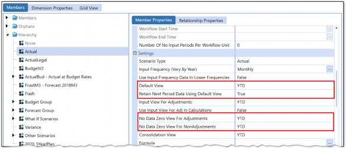
Figure 2.7
Cube Data › Cube Building Blocks › Data Cells › Data Cell Status › Derived Data
Derived Data Example
Let’s look at four examples of data being entered into a Cube View for Scenarios with different Default View Settings.
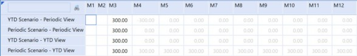
Figure 2.8
The value of 300 was entered into M3 in each of the four cells. Each of those cells will show a Cell Status of IsRealData = True and that number will be stored in V#YTD. What happens in the subsequent periods is where things get interesting.
Periods M4-M12 will show Derived values to get the data back in synch with the Scenario’s Default View and NoData Zero View Properties. This data is shown as grayed out in Cube Views by default.
The Cell Status will show as Is Derived Data = True with a Storage Type of
StoredButNoActivity.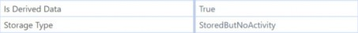
Figure 2.9
The above example is meant to illustrate how Data Cell Status is affected by various Scenario settings. Consult the OneStream Design & Reference Guide for more information on these settings.
Cube Data › Cube Building Blocks › Data Cells › Data Cell Status
Storage Types
All data – either Real or Derived – will have a Storage Type. Below are the Storage Types that exist in OneStream.
InputJournalCalculationDurableCalculationConsolidationTranslationStoredButNoActivity
Cube Data › Cube Building Blocks
The Data Unit
The next building block of the Cube is the Data Unit which was briefly introduced in the last chapter. As a reminder, the Data Unit is defined as all the data cells within a unique combination of Cube, Scenario, Time, Consolidation, and Entity Dimensions.
To illustrate what purpose the Data Unit serves, let’s go back to our address analogy. How many addresses are there in the US? In the world? Let’s pretend we are interviewing at a company that loves to torture potential candidates with these weird questions. We might think about how many addresses are in a particular city or town and then extrapolate that number to arrive at the number of addresses in a state. Or maybe we could take the total population and divide it by an average number of people per address.
At the end of the day, the interviewer knows you won’t guess correctly, but they want to see how you break the problem down into smaller parts and work up to an answer.
Now instead of addresses, let’s take an example of a Cube and look at the number of potential intersections that exist.
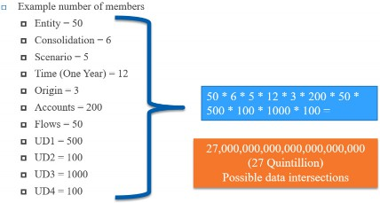
Figure 2.10
That’s a lot of zeros (and yes, I had to Google what the name for that number was). Of course, the number of intersections where data is actually populated will be much lower, but the problem still persists. Just like our interview question riddle, we need a way to break the problem down into more manageable parts.
This same concept is why the Data Unit exists in OneStream. Quite simply, the Data Units breaks down the Data in the Cube into smaller Units. A Data Unit, therefore, is essentially a page of data used to break down the whole data set into chunks that can be read or processed at the same time by the server, and which can easily fit into server memory.
Cube Data › Cube Building Blocks
The Data Buffer
A Data Buffer is the term used to refer to a collection of data cells within a Data Unit. A Data Buffer could be all the data in a Data Unit but is likely a smaller subset. A Data Buffer can also be referred to as a chunk, block, or slice of data. Whichever word you prefer, the concept remains the same.
When we calculate data in the Cube, we will almost always work with Data Buffers. It’s what makes the OneStream Calculation Engine so powerful. We can work with large data sets at one time and perform complex arithmetic on them. When defining Data Buffers for calculations, limiting the scope and size of Data Buffers will not only help calculations be more accurate but also help them perform well. We will explore this concept in great detail later in this chapter.
Cube Data › Cube Building Blocks › The Data Buffer
Analogy To Excel
Almost everyone has used Excel to perform calculations on data within a spreadsheet. Writing calculations in Excel is relatively straightforward – you take cell A1 and multiply it by cell B1, and the result is stored in C1… easy peasy. While you can get pretty fancy with IF statements and Vlookups, at the end of the day, the calculations boil down to arithmetic on individual cells.
Applying this same concept to OneStream Calculations quickly falls on its face. The OneStream Cube has simply too many data intersections to calculate cell by cell. Either you – the Calculation writer – or the server would start overheating from being overworked. Working with Data Buffers allows the Calculation writer and the server to do more (data) with less (code).
Cube Data › Cube Building Blocks › The Data Buffer
Perhaps a Better Analogy
Let’s stay within our Excel spreadsheet world. Pretend we have two data sets for Price and Volume, each consisting of 15 cells. Now, instead of multiplying cell by cell (15 individual calculations), we could multiply two groups of 15 cells (arrays) in one calculation resulting in a new array of 15 calculated cells.
Array1 * Array2 = Array3
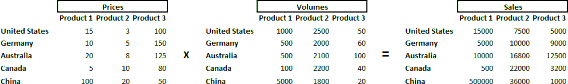
Figure 2.11
Now we’re much closer to what Data Buffers allow us to do. But instead of having two Dimensions to describe our data – Countries in rows and Products in columns – we have 18 Dimensions.
THAT’S the power of the Data Buffer. Executing the same Calculation logic for a large volume of datapoints is, in fact, much more efficient than executing an independent Calculation for each of them, especially if the logic is the same across all the data points.
Cube Data › Cube Building Blocks › The Data Buffer
Visualize the Data Buffer
Since a Data Buffer is a subset of cells within a Data Unit, it can be visualized by querying the database for a specific Data Unit.
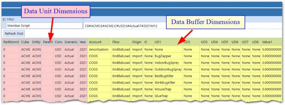
Figure 2.12
The above query shows rows for every data cell in the Data Unit specified in the Member Script field. These rows comprise a Data Buffer.
Cube Data › Cube Building Blocks › The Data Buffer
A Data Buffer is an Object
Just like a string or integer, a Data Buffer is an object in VB.NET with its own set of properties and methods. Data Buffers can be a declared variable, using one of several API functions.
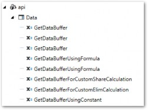
Figure 2.13
The api.Data.GetDataBuffer function requires a ScriptMethodType, DataBufferScript, and DestinationInfo. The ScriptMethodType is an enumerable and the DestinationInfo can be declared as an object. The DataBufferScript is a Member Script string, (e.g., A#Sales).
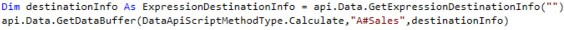
The api.Data.GetDataBufferUsingFormula only requires the DataBufferScript string object.
While each of these functions are slightly different in the parameters they require, the end result is the same – a Data Buffer is brought into existence.
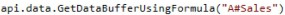
For most of the examples in this book, I will use GetDataBufferUsingFormula.
Cube Data › Cube Building Blocks › The Data Buffer › A Data Buffer is an Object
Logging the Data Buffer
Once we have our Data Buffer object declared, we can do several things with it. IntelliSense shows us the available extension Methods associated with the object.
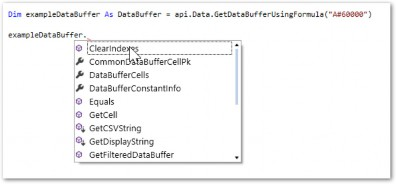
Figure 2.14
The LogDataBuffer Method requires some additional parameters for API, description, and an integer for the maximum number of cells to output.
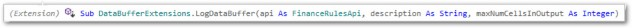
Figure 2.15
The completed script now looks like this:
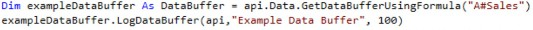
After executing the script via a Data Management Step, the Data Buffer is logged in the Error Log.
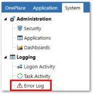
Figure 2.16 The logged Data Buffer is shown in the Error Log.
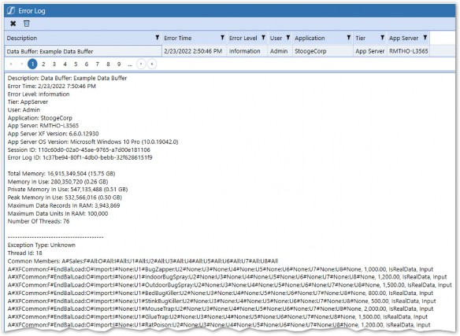
Figure 2.17
Cube Data › Cube Building Blocks › The Data Buffer › A Data Buffer is an Object
Anatomy of a Data Buffer
Data Buffers contain a lot of information about both the Data Buffer itself, and the data cells within it. Key components are highlighted below.
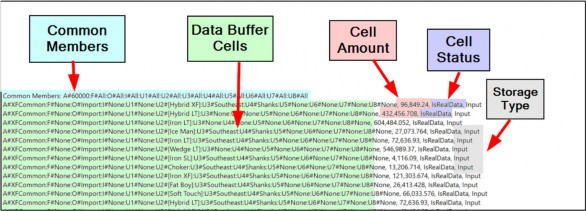
Figure 2.18
Cube Data › Cube Building Blocks › The Data Buffer › A Data Buffer is an Object › Anatomy of a Data Buffer
Common Members
The Common Members header refers to all the non-Data Unit or what is sometimes called Account-Level Dimensions. The Common Members represent Dimension Members that are shared for all rows in the Data Buffer. Each of the Account-Level Dimensions will either refer to a specific Member or #All.
#All means that the Data Buffer will include every intersection that has data for that Dimension. These will be the Members defined in the Member Script.
The reason for Common Members will be much clearer later, when we start using calculations, but for now, let’s just say that only Data Buffers with the same Common Members can be used in the same Calculation.
Cube Data › Cube Building Blocks › The Data Buffer › A Data Buffer is an Object › Anatomy of a Data Buffer
Data Buffer Cell POV
Data Buffer Cells all have a Member Script or Primary Key, which is the intersection of all 18 OneStream Dimensions. This Member Script will be shown for all cells in the Data Buffer. You may be wondering why the Data Unit Dimensions aren’t listed here. Well, technically, they are known because Data Buffers always execute on a Data Unit which is defined when executing the Calculation. Because of this, all Data Buffer Cells within the same Data Buffer will have the same Data Unit Dimension Members based on the current Data Unit being processed by the DUCS.
Cube Data › Cube Building Blocks › The Data Buffer › A Data Buffer is an Object › Anatomy of a Data Buffer
Cell Amount
The numeric data in the cell. This is truncated to two decimal places but is stored in the database tables to 9 decimals.
Cube Data › Cube Building Blocks › The Data Buffer › A Data Buffer is an Object › Anatomy of a Data Buffer
Cell Status
Refers to whether data is Real, Derived, or NoData.
Cube Data › Cube Building Blocks › The Data Buffer › A Data Buffer is an Object › Anatomy of a Data Buffer
Storage Type
When data is written to the Cube by either Form entry, data import, Calculation, or Consolidation, OneStream keeps track.
Cube Data › Cube Building Blocks › The Data Buffer
Filter and Remove Members from Data Buffers
Data cells within a Data Buffer can be filtered out based on their dimensional information. The FilterMembers and RemoveMembers functions offer capabilities that allow changing a Data Buffer to only include data cells for Dimension Members that are specified in the function parameters.
You can have as many parameters as you want to specify Member Filters and can even use different Member Filters for multiple Dimension Types. The resulting filtered Data Buffer will only contain numbers that match the Members in your filters. RemoveMembers has the same syntax, but it has the opposite effect. It takes away the data cells for the Members you specified, instead of keeping them.
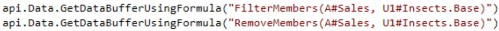
Cube Data › Cube Building Blocks › The Data Buffer
Removing NoData & Zeros from Data Buffers
NoData or Zero cells can also be filtered out of Data Buffers using the RemoveNoData and
RemoveZeros functions.
RemoveNoData– Removes all data cells with Cell Status of NoData.
RemoveZeros– Removes all data cells with a Cell Amount of 0 or with a Cell Status of
NoData.
Simply wrap RemoveZeros, or RemoveNoData with parentheses around any Data Buffer.
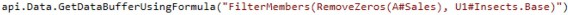
It makes sense that we would want to exclude Zeros and NoData cells from our Data Buffers as they provide no analytic value, and they only take up room in the database which degrades performance. These functions should be used by default, any time a Data Buffer is declared.
| Note: FilterMembers, RemoveMembers, RemoveZeros, and RemoveNoData can only be used with api.Data.GetDataBufferUsingFormula and not with api.Data.GetDataBuffer. |
Cube Data
Conclusion
Understanding how data is stored and organized in the Cube is vital to writing efficient and effective Calculations and Business Rules. In this chapter, the three building blocks of the Cube have been identified and explained.
Data cells are a singular data point at the intersection of all 18 Dimensions.
The Data Unit breaks the Cube down into smaller parts based on the unique combination of Cube, Scenario, Time, Consolidation, and Entity.
The Data Buffer is a subset of data cells within the Data Unit.
The Finance Engine processes data in the Cube by Data Units. When writing Calculations, we are always working with a subset of the data within the current Data Unit being processed, called a Data Buffer. A Calculation writer should always be thinking in terms of Data Buffers. The next chapter will explain how to write Calculations by performing math on Data Buffers.